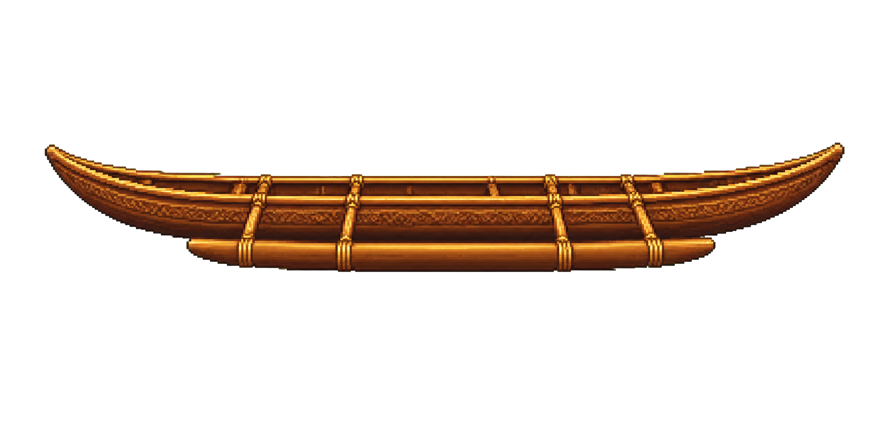
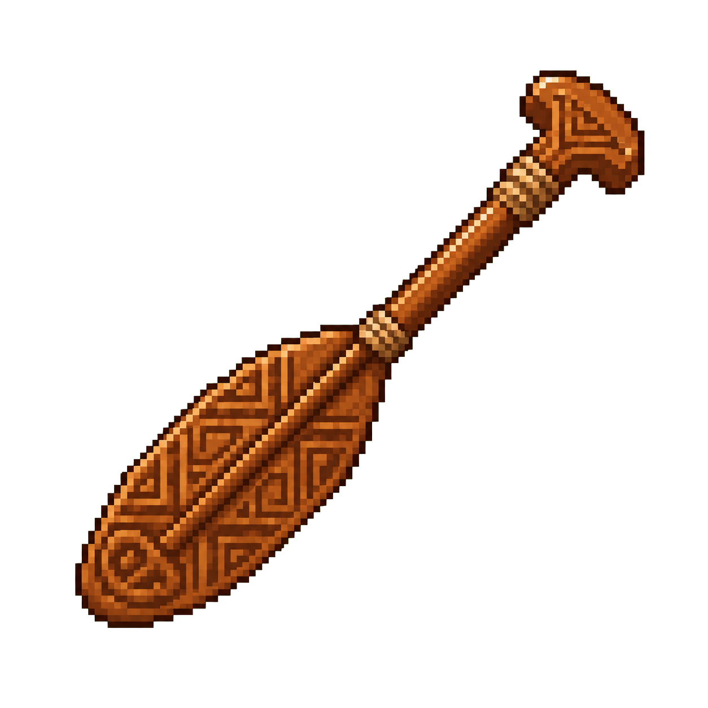
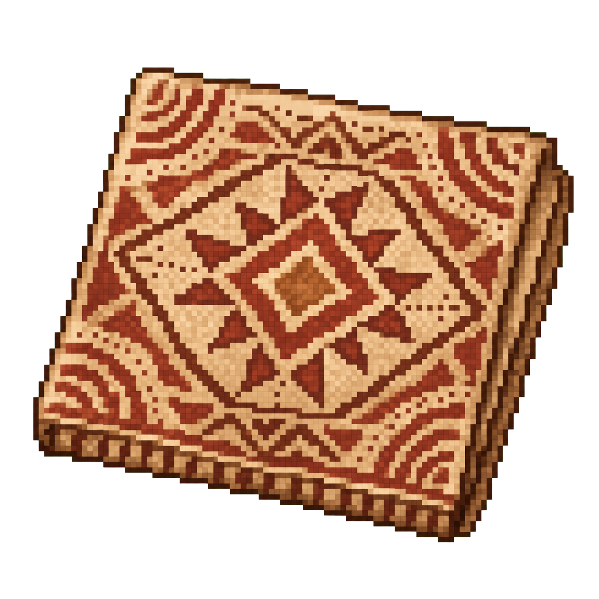
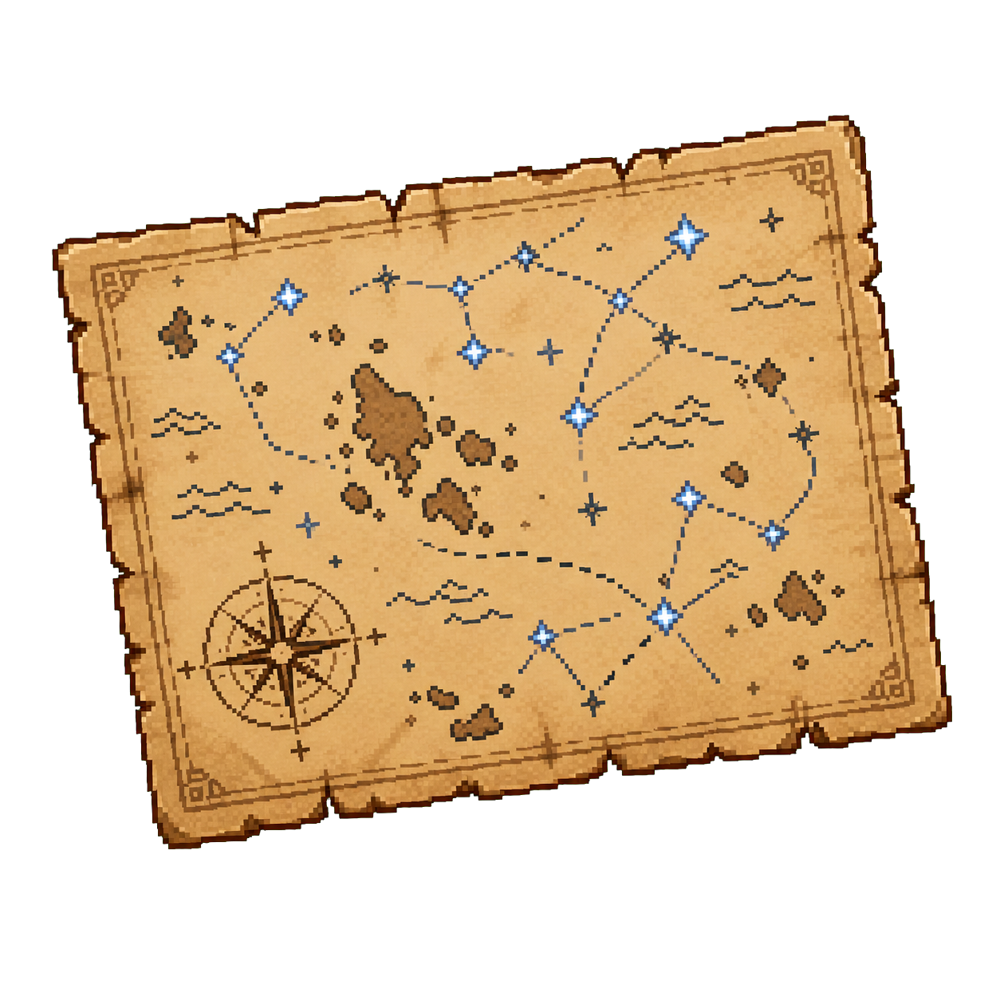

✦
探索目标
2/5
了解船身长度
博物馆地图
☰
×
航海日志
△
船只图鉴
♣
岛屿故事
◉
航海符号
✦
星象线索
斐济 · 瓦卡独木舟

长度
12.6 米
用途
远航 / 运输 / 探索
岛屿文化
斐济（太平洋）
制造原因
适应长途航行与海洋资源交流
已解锁
2/5
已收集的物品

船桨

帆布纹样

星图
库拉馆长
先从船头走到船尾。你会发现，船身长度本身就是远航的答案。
◇
地图
▤
航海日志
▣
背包
⚙
设置
E 查看展品
×
独木舟展厅
为什么会有这么大的船？